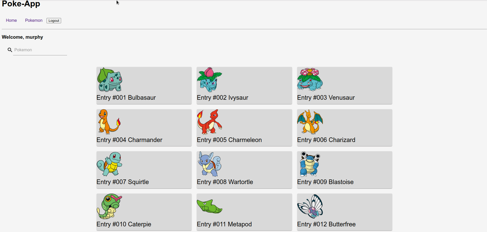
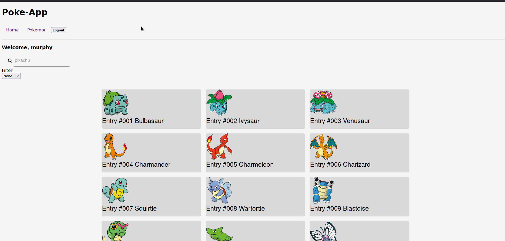
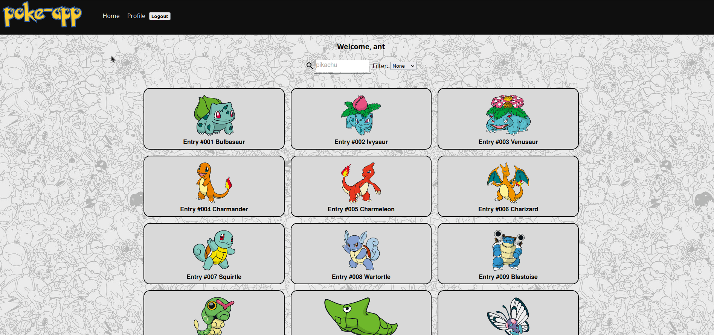
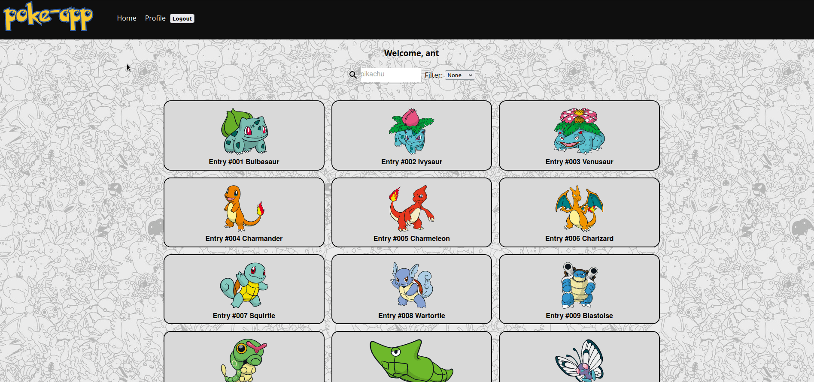

Week 1

For the first week I worked on getting the Poke API information loaded for the home page. There is also a log in page that is up and running. Using React as my frontend framework I was able to map the information for over 649 different pokemon. For next week I need to adjust the image sizes and the card sizes for.
Week 2
This week I fixed my grid layout and resized the cards a bit. I started working on loading the Pokemon API information for the single pages. Now when you hover over a card it will show an animation and can be clicked to a new route for that pokemon based on their ID. I also started working on a search feature that has yet to work. For next week I will work on the search feature as well as a filter option that will sort the Pokemon based on their region. I am also hoping to better style the single page route and display more information form the API.
Week 3
This week I was able to get the search and filter features working. Now you are able to search for whatever pokemon you are looking for from the first 5 generations of information loaded from the API. You are now able to filter through each region for those generations as well. Next week I hope to work more on the styling of the page and focus a bit more on the single page for each of the Pokemon. Ever single page should have a picture, and some other information loaded about the Pokemon.
Week 4
 

For Week 4 I worked a bit on styling the entire site. I took the plain prototype layout and transformed it into something cleaner. I am still working on the single page styling and figuring out what kind of information I want to display. I had issues showing the right sizes for the images on the single page routes. Next week I hope to finish the rest of my style and fix the image resizing issue. I also have plans to scrap the login feature I have as it really serves no purpose for this site. In the near feature maybe I can add some interactions for logged in users and the information being provided.
Week 5

For the final week I have completed the website and have fixed all my styling issues. The website has been deployed and is responsive for all screen types. The information used for this website is being fetched from the Pokemon API. You are able to search for the Pokemon within the first 5 generations and filter them based on their region as well. When you hover over one of the cards you can click on it to be redirected to single page of that Pokemon. On the single page it will display some more information on the Pokemon. In the near future I would like to work more with the logged in feature and have some interactions with user profiles and the information that I have fetched from the API.